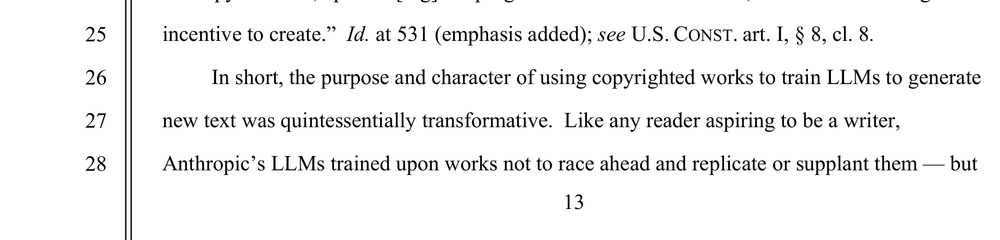
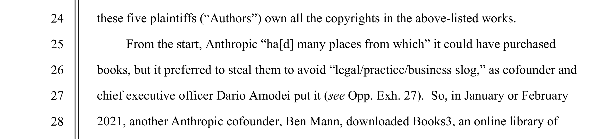
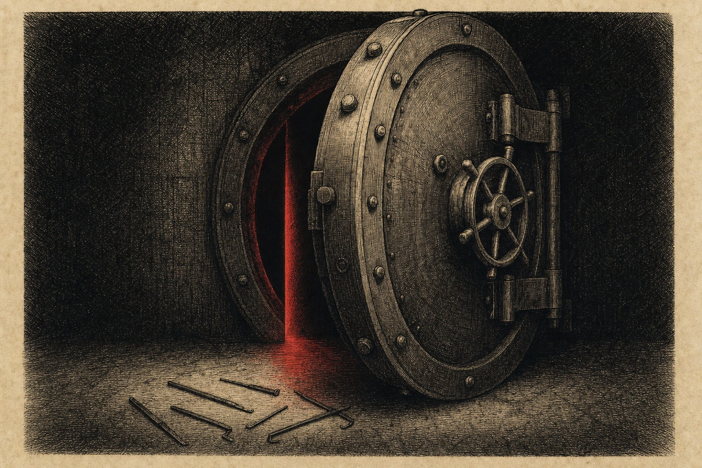

Page 02 of 11 — the case file
Structural Dilemma, Context & Why It Matters
The Structural Dilemma
Frontier AI labs built their models by scraping the internet’s trove of human intelligence — books, art, code, and forums — without asking, and without care for silly things like intellectual property rights or terms of service. They argued their actions constituted transformative fair use. Then Chinese labs began distilling those same models’ outputs to train cheaper competitors, and the frontier labs, without any appreciation for the irony of the situation, began fighting a war to stop the “thievery” of their models. This conflict is only going to keep becoming louder, as the labs are attempting to hold two incompatible ideologies at once. If learning from anything publicly reachable is fair, they have little ground to stand on against their imitators. If taking requires consent, the models we already depend on were built wrong from the start. The people inside the industry cannot simply choose the ethical option, because systemic pressures close it off: frontier training requires data at a scale only mass extraction makes viable, the law of the jungle punishes any lab that unilaterally pays for what rivals take freely, and the courts have so far drawn the line at how data was acquired rather than whether taking it was right (Bartz v. Anthropic). As a computer science major working in the AI industry, I am investigating the dilemma my own field is being built on.
Why It Matters
The Bartz v. Anthropic litigation ended in a $1.5 billion settlement — the largest publicly reported copyright recovery in history (Authors Guild) — but it was the court’s summary-judgment order that established that training on copyrighted work is fair use as long as the copies were acquired legally (Bartz v. Anthropic 13–14). That precedent governs how every future model gets built, whose work feeds it, and whether anyone is paid. Meanwhile, the incentive to produce the human writing, art, and code these systems depend on erodes over time, as the market rewards extracting that work over creating it — and the models built from it now flood the internet with low-quality content that degrades it both as training data and as a place for people to be. The reflexive take, that the labs are thieves complaining about thievery, is satisfying, and it frustratingly stops thought exactly where it should start. Schur’s version of Kant’s test asks, “Would it be okay if everyone did this?” (256). The harder question I want visitors asking is what rule about mining data they would actually accept, and whether any such rule could realistically be enforced.
The Ruling at the Center of It
The easiest place to watch the drama is the court order itself:
Fair Use
Exhibit 02-A · Bartz v. Anthropic, order p. 13“In short, the purpose and character of using copyrighted works to train LLMs to generate new text was quintessentially transformative.”

The learning side was blessed by fair use laws, setting a new precedent.
The same order, five pages later, turns to how the books were obtained:
Theft
Exhibit 02-B · Bartz v. Anthropic, order p. 18“Before buying books for its central library, Anthropic downloaded over seven million pirated copies of books, paid nothing, and kept these pirated copies in its library even after deciding it would not use them to train its AI (at all or ever again).”

However, the judge found Anthropic’s use of massive libraries of pirated materials illegal. It’s important to note that this ruling doesn’t stop Anthropic from buying the books, digitizing them, and uploading them to their models. In fact, Anthropic had “many places from which” to buy books, but its CEO preferred to skip the “legal/practice/business slog” of paying (Bartz v. Anthropic 2).

Judge Alsup then closed the loophole Anthropic had asked for:
Exhibit 02-C · Bartz v. Anthropic, order p. 14“There is no carveout, however, from the Copyright Act for AI companies.”

If you look at the three different lines, a clear picture forms. The law drew its line at the methods of obtaining the copies of the books, and never questioned whether using the books’ knowledge in AI models was right.

![Poster titled ‘It’s Fair Use When We Do It.’ A snake drawn as a circular pipeline eats its own tail. Its black half — human work copied into an AI model — is stamped ‘quintessentially transformative: FAIR USE.’ Its red half — the AI’s answers copied again into a cheaper copycat — is thicker (16 million exchanges by about 24,000 fake accounts vs. 7 million pirated books, drawn to scale) and stamped ‘free-ride: THEFT.’ Around the loop, four groups each win under one rule and lose under the other; at center sit the value collisions and the $1.5 billion paid to authors.](assets/infographic.png)